Want to read the English version? Then, click here.
På denne side kan du læse om:
Kortforsyningspluginet hentes fra QGIS' officielle Plugin Repository. Start QGIS, og søg efter 'Kortforsyningsplugin' i Plugin Repository.
Det er nødvendigt at have en bruger til Kortforsyningen. Hvis du ikke allerede er registeret som bruger, kan du oprette en bruger her - det er gratis.
Fra version 2.6 af Kortforsyningspluginet skal du bruge en token. Opret en token på Kortforsyningen.dk, hvor du logger ind med dit brugernavn og password. Derefter klikker du på 'Lav ny token' i fanen 'Tokens', hvorved du opretter en token, der kan anvendes i stedet for brugernavn og password.
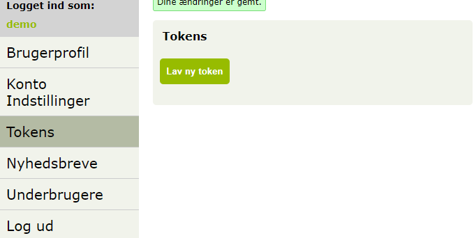
Fra version 2.6: Indtast dit token i QGIS' indstillingsdialog. Klik dernæst på 'OK':
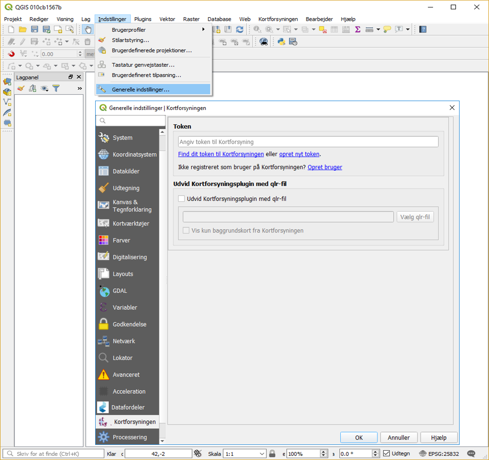
Før version 2.6: Indtast dit brugernavn og kodeord i QGIS' indstillingsdialog. Klik dernæst på 'OK':
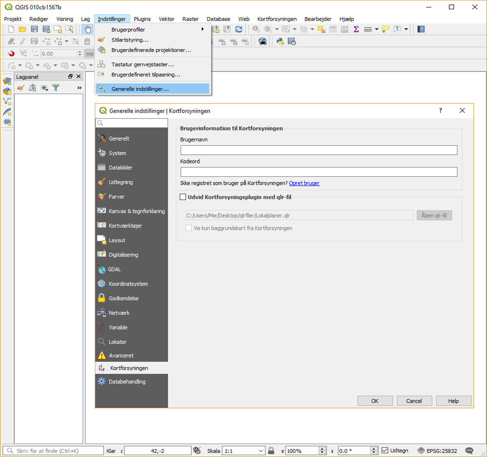
Når pluginet er installeret tilføjes menuen, Kortforsyningen, automatisk til QGIS. Denne menu indeholder webservices fra Kortforsyningen. Disse webservices er kategoriseret i temaer.
Et lag fra Kortforsyningsmenuen tilføjes til lagpanelet ved at klikke på det ønskede lag i menuen:
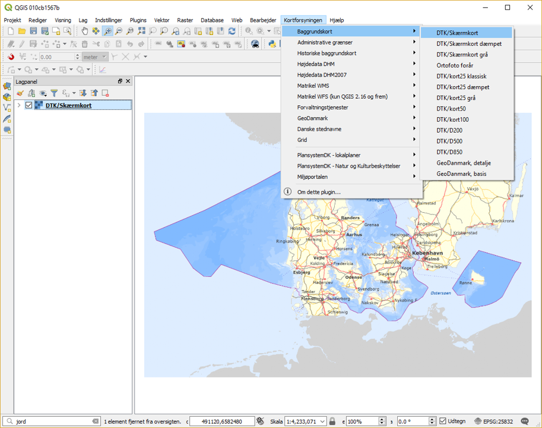
OBS. Pluginet kalder services fra internettet, derfor er det nødvendigt at have internetadgang for at temaerne og lagene vises.
OBS. Har du ikke adgang til lagene, kan dette skyldes konflikt med din web-sikkerhedsindstilling, der ikke tillader at pluginet henter en qlr-fil fra Kortforsyningen. Dette løses ved at url'en til qlr-filen (https://apps2.kortforsyningen.dk/qgis_knap_config/Kortforsyningen/kf/kortforsyning_data.qlr) tilføjes som tilladt ekstern opkobling.
OBS. Temaerne, der vises, er bestemt af hvilke rettigheder din kortforsyningsbruger har. Hvis din bruger har adgang til yderligere tjenester udstillet gennem Kortforsyningspluginet, vil disse automatisk være tilgængelige i menuen.
Lagene fra Kortforsyningsmenuen er desuden søgbare fra søgefeltet i nederste venstre hjørne (ny funktionalitet i QGIS 3). Kortforsyningslag kan desuden tilføjes fra dette søgefelt.
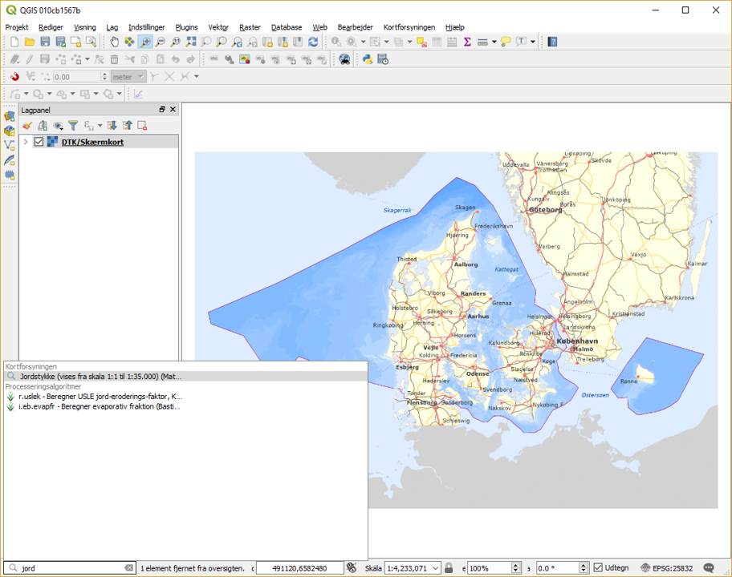
Det er muligt at tilføje egne temaer og lag til Kortforsyningsmenuen. Dette kan fx være webservices fra andre udbydere (fx Plansystem.dk) eller egne lag (fx tabeller i en database eller lag gemt på et drev. Lagene, der skal tilføjes, skal være gemt som en qlr-fil.
Her ses et eksempel på, hvordan en qlr-fil kan se ud, samt hvordan Kortforsyningsmenuen ser ud når denne qlr-fil er tilføjet pluginet. Qlr-filen består af grupper, hvor gruppenavne bestemmer temanavne i Kortforsyningsmenuen. Lagene i grupperne bestemmer, hvilke lag, der findes under temaerne i Kortforsyningsmenuen:
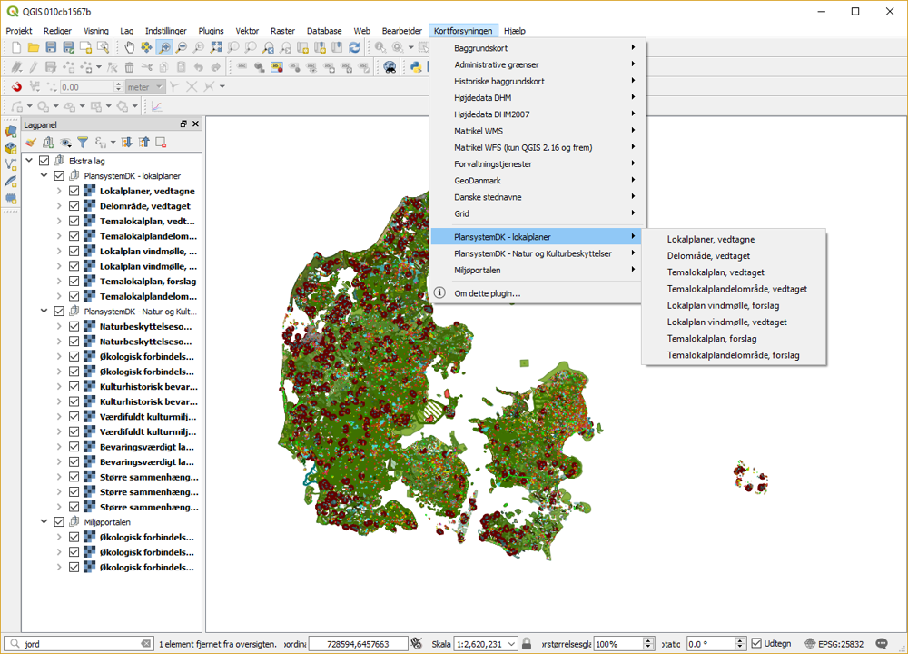
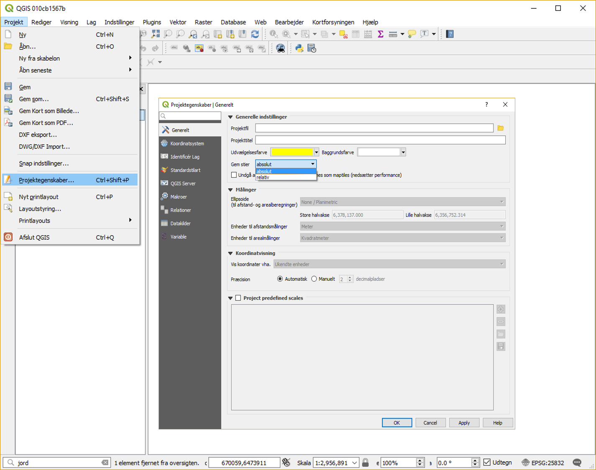
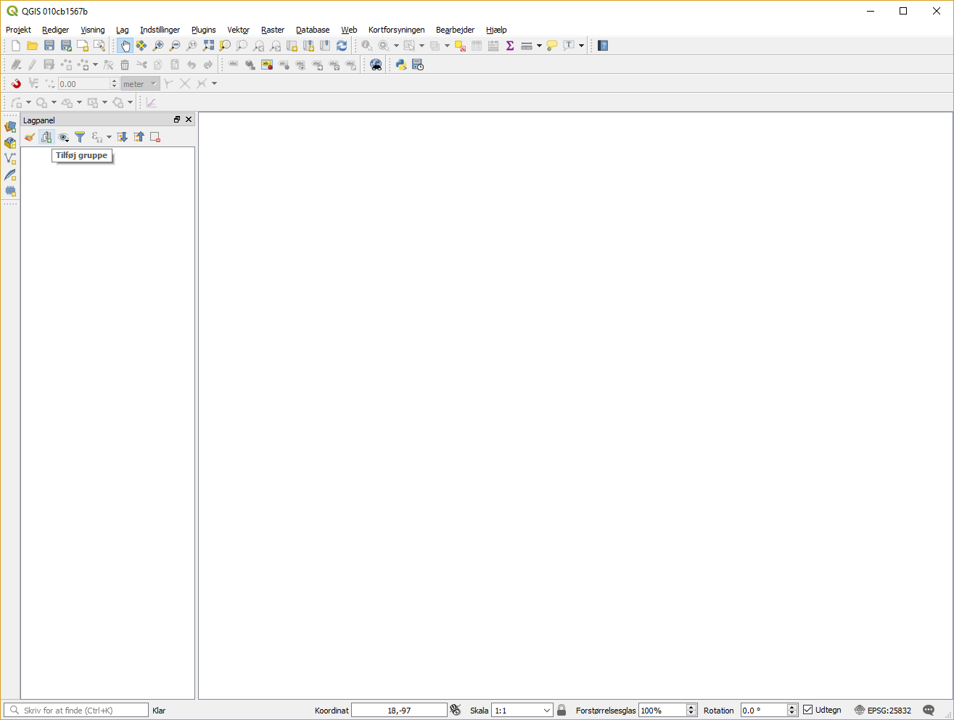
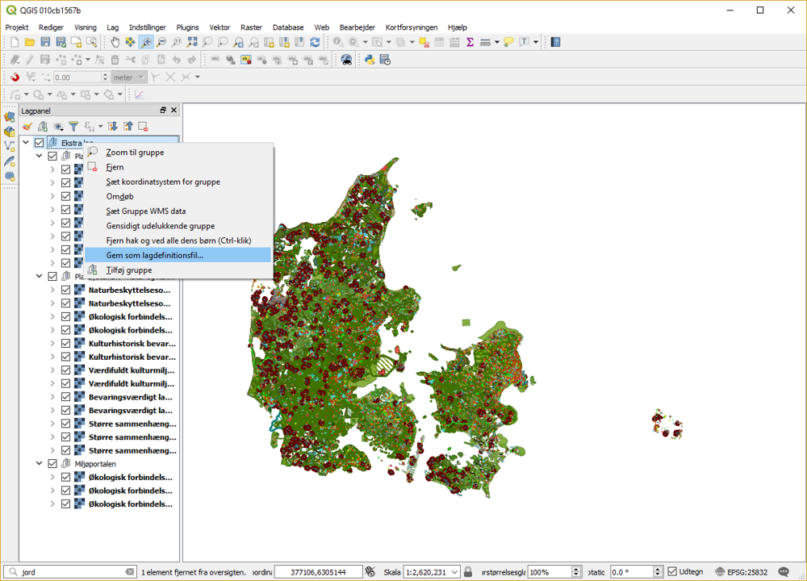
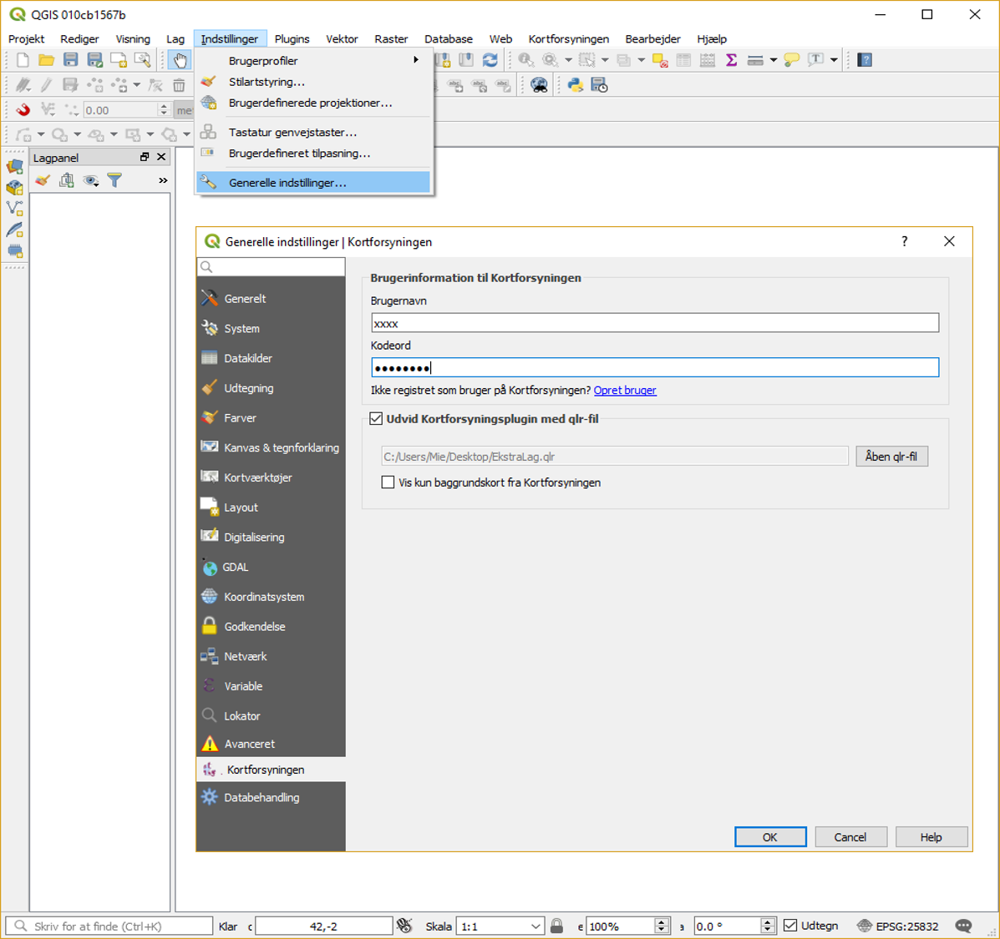
Bemærk, at en qlr-fil, som peger på lokale data, kun kan vises lokalt. Skal den deles med andre er det vigtigt, at data ligger på et fællesdrev.
Pluginet bruger services fra Kortforsyningen. Se driftsstatus her
Want to read the Danish version? Then, click here.
On this page, you can read about:
The Kortforsyningplugin is available from the QGIS' Official Plugin Repository. Start QGIS and search for 'Kortforsyningsplugin' in the Plugin Repository.
To get started, a user at Kortforsyningen is required. If you are not registered as a user, create a user from this link – it’s free.
From version 2.6 of the Kortforsyningsplugin, you need a token to Kortforsyningen. Create a token at Kortforsyningen.dk,where you have to log in with your Kortforsyning username and password. Afterwards, click on 'Opret ny token' in the Token-panel. By doing this you create a token, that can be used instead of your username and password:
From version 2.6 of the Kortforsyningsplugin: Enter your token i the QGIS options dialog. Click on 'OK':
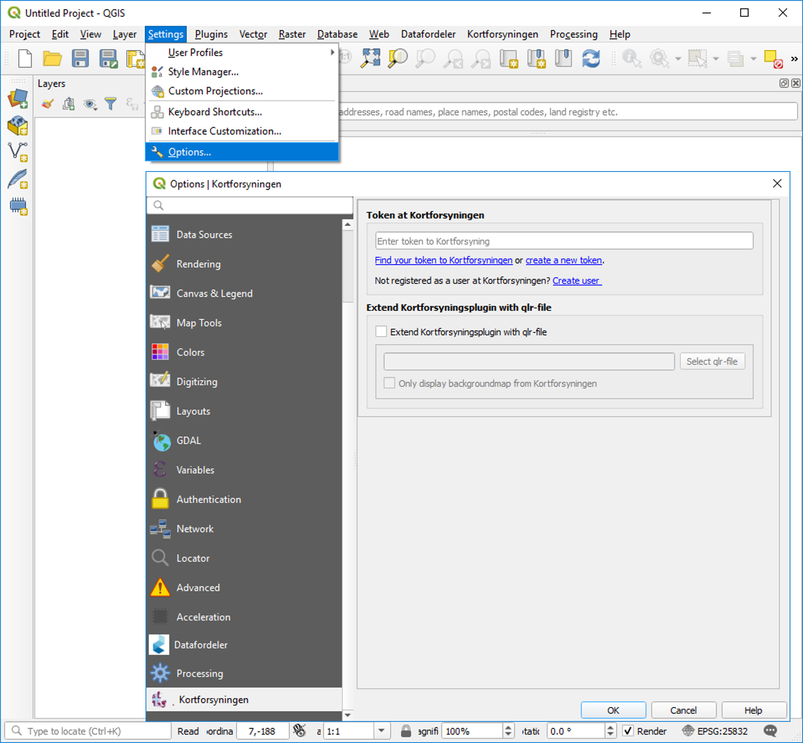
Before version 2.6 of the Kortforsyningsplugin: Enter your username and password under the Kortforsyningspanel in the QGIS options dialog. Click on 'OK':

When the plugin is installed, a new menu, called Kortforsyningen, is automatically added to QGIS. This menu contains webservices from the Kortforsyning. These webservices are categorized into themes.
With a click on a layer in the Kortforsyningsmenu, the layer is added to the layer panel:
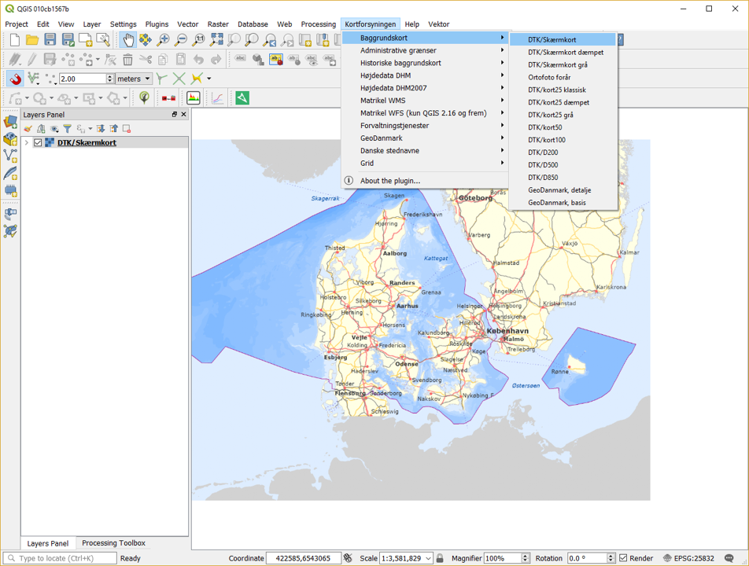
Note. The services require internet, and the themes and layers are only displayed when the device is connected the internet.
Note. If you don't have access to the layers (and you have entered a correct username and password), the reason might be, that your web security settings doesn't allow the plugin connecting to the qlr-fil at Kortforsyningen (https://apps2.kortforsyningen.dk/qgis_knap_config/Kortforsyningen/kf/kortforsyning_data.qlr). Approving the qlr-fil as an external connection in the web security settings might help.
Note. The themes displayed is based on your user type at Kortforsyningen. Hence, only if your user has access to some of the restricted WMS- or WFS-services included in the Kortforsyningsplugin, these will be available.
The layers from the Kortforsyning is also searchable from the locator (searchbar) in the lower left corner (a new feature in QGIS 3). It is possible to add layers from this searchbar.
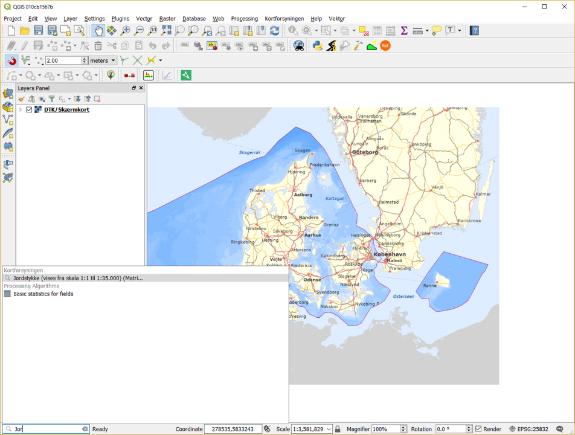
It is possible to expand the Kortforsyningsmenu with your own themes and layers. This can be webservices from other providers (i.e. PlansystemDK) or your own layers (i.e. from a database or saved on a drive). The layers to be added need to be saved as a qlr-file.
This is an example of what a qlr-file can look like, and the resulting added themes and layers in the Kortforsyningsmenu. The qlr-file consists of groups which names determine the theme name, while the groups content determines the layers in the theme:
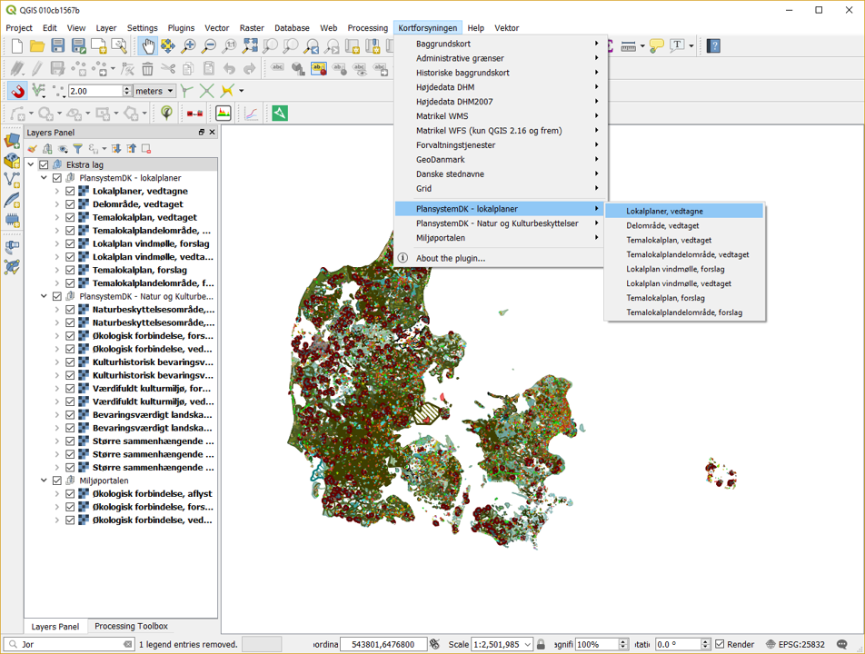
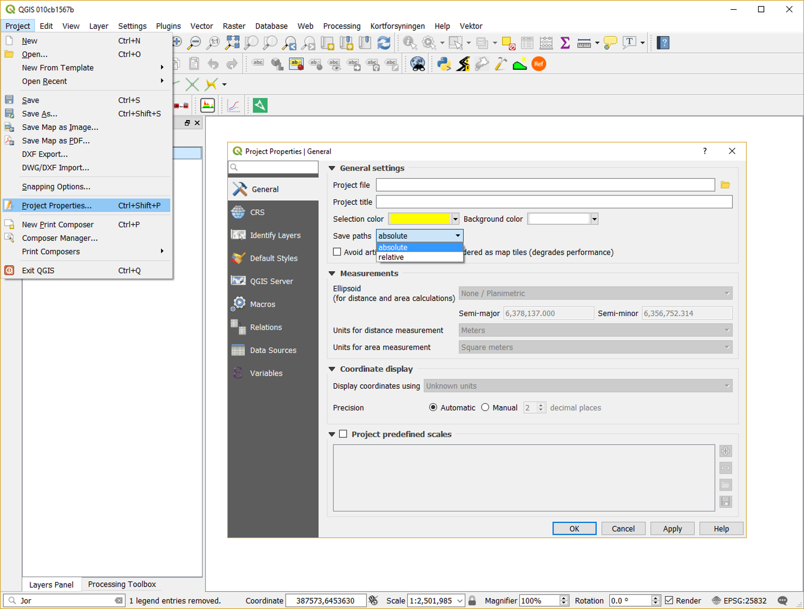
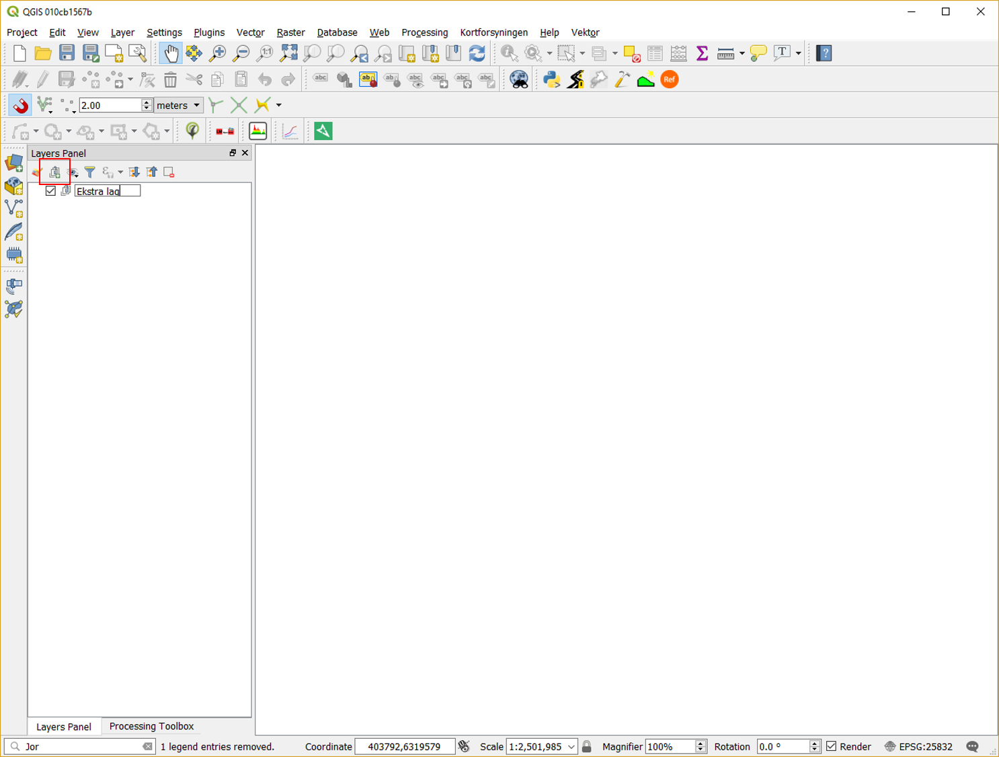
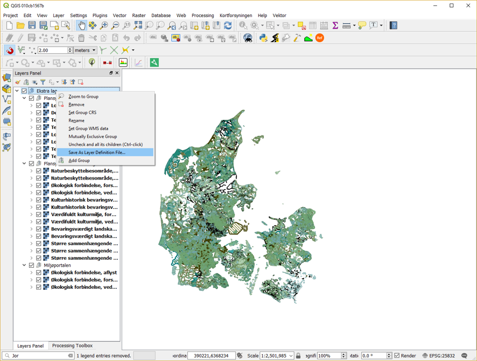
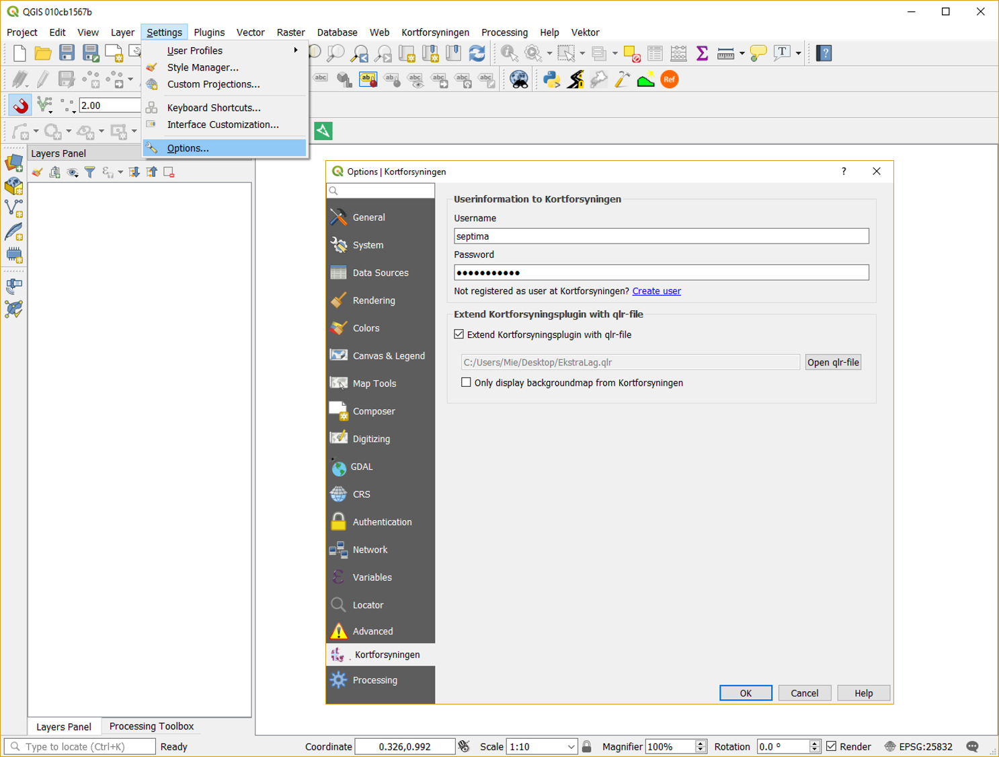
Notice, if your qlr-file includes local data, only people with access to these data, are able to add the layers from the Kortforsyningsmenu.
The plugin uses services from the Kortforsyning. Check out the status of the services.